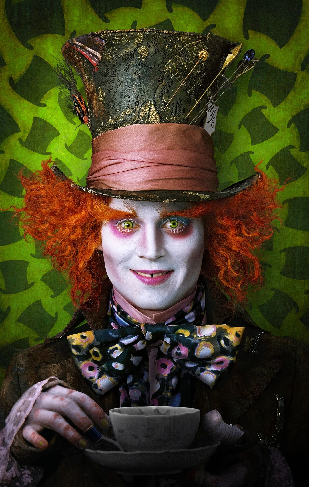

El Sombrerero Loco
×

El Sombrerero Loco
EL SOMBRERERO LOCO es un personaje de la novela "Alicia en el país de las maravillas", de Lewis Carroll. Es conocido por su excéntrica personalidad y sus frases sin sentido, invitando a Alicia y al lector a reflexionar sobre la locura y la percepción de la realidad. Su fiesta de té perpetua es uno de los momentos más icónicos del libro.